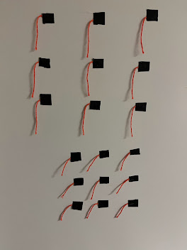
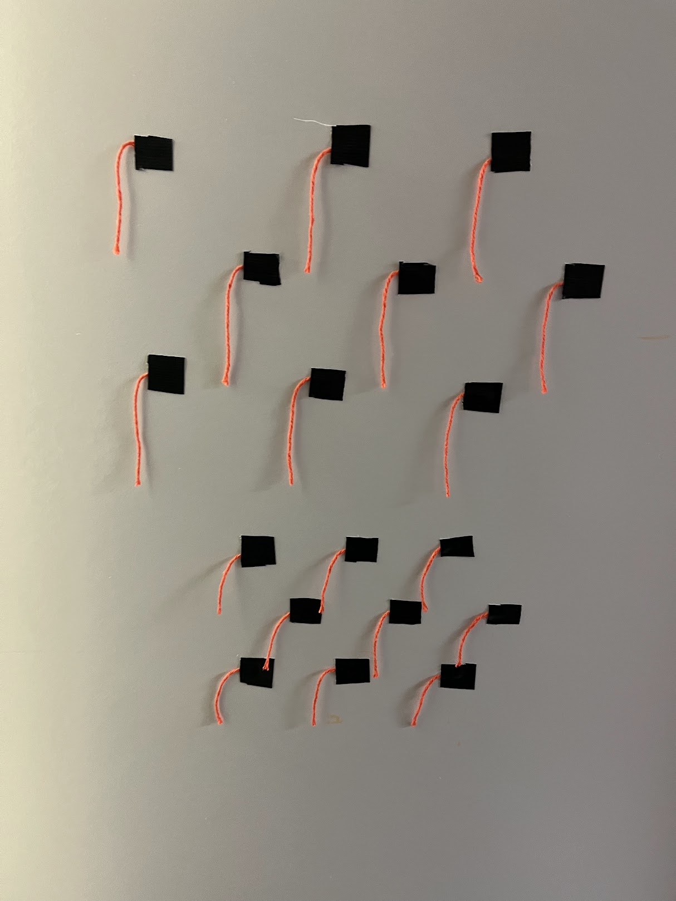
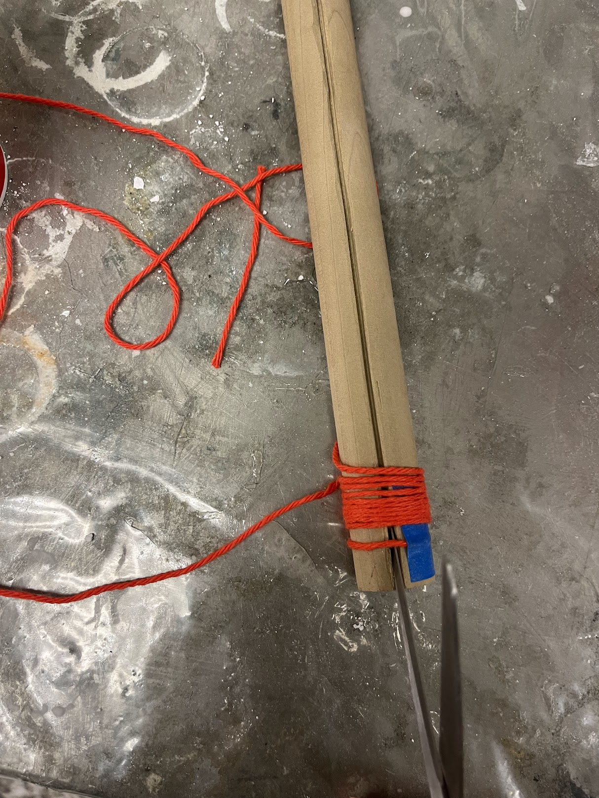
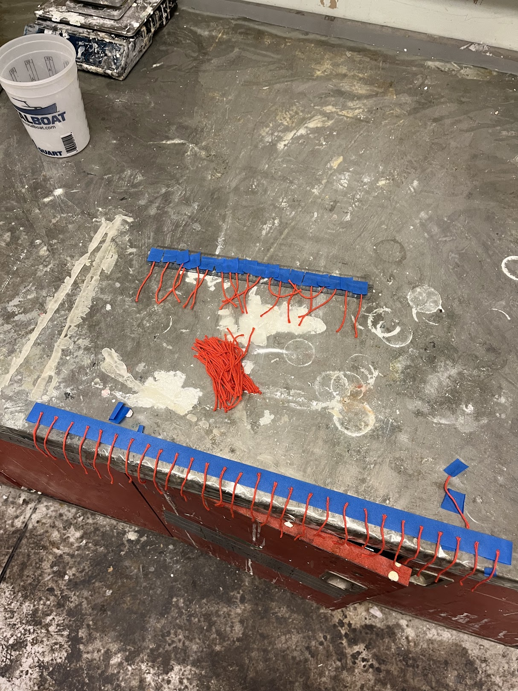
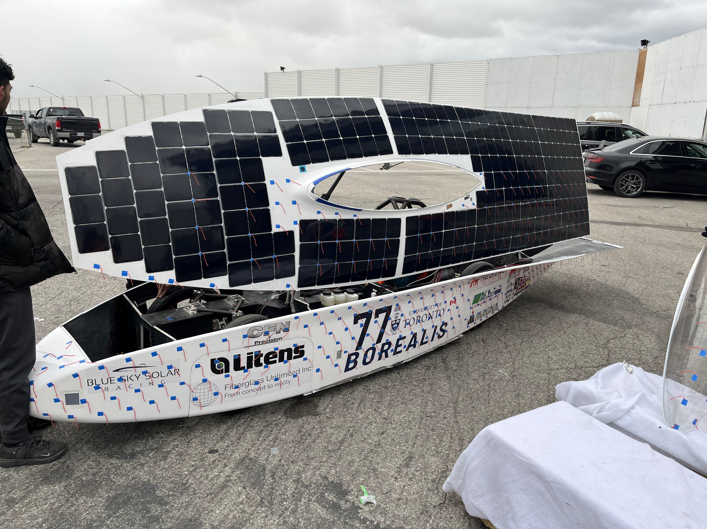
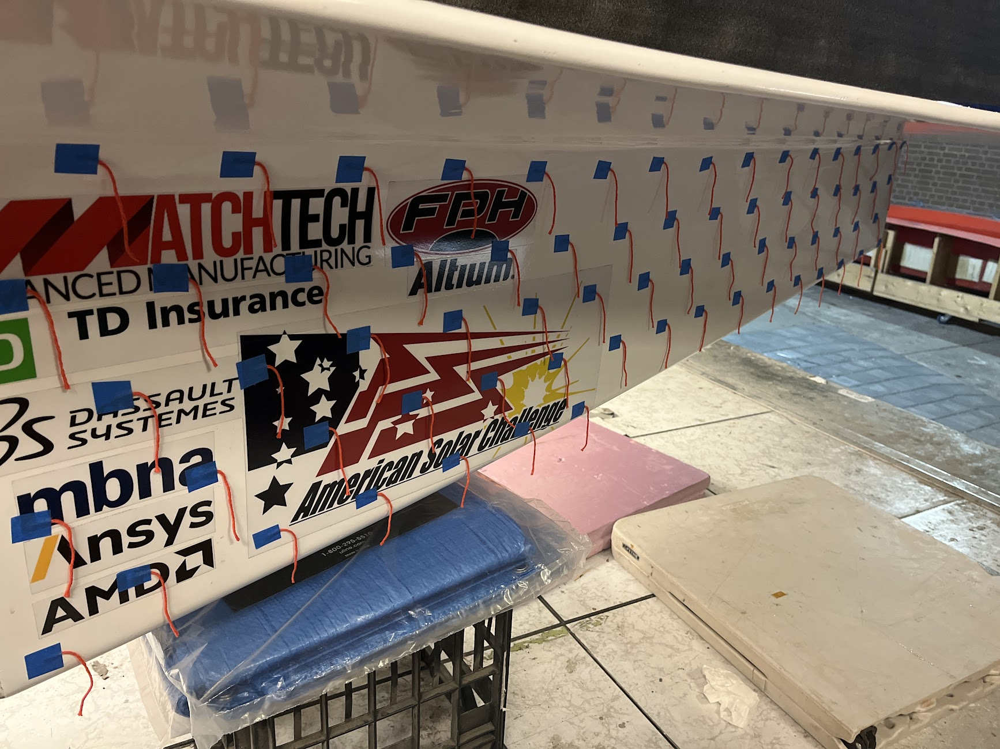
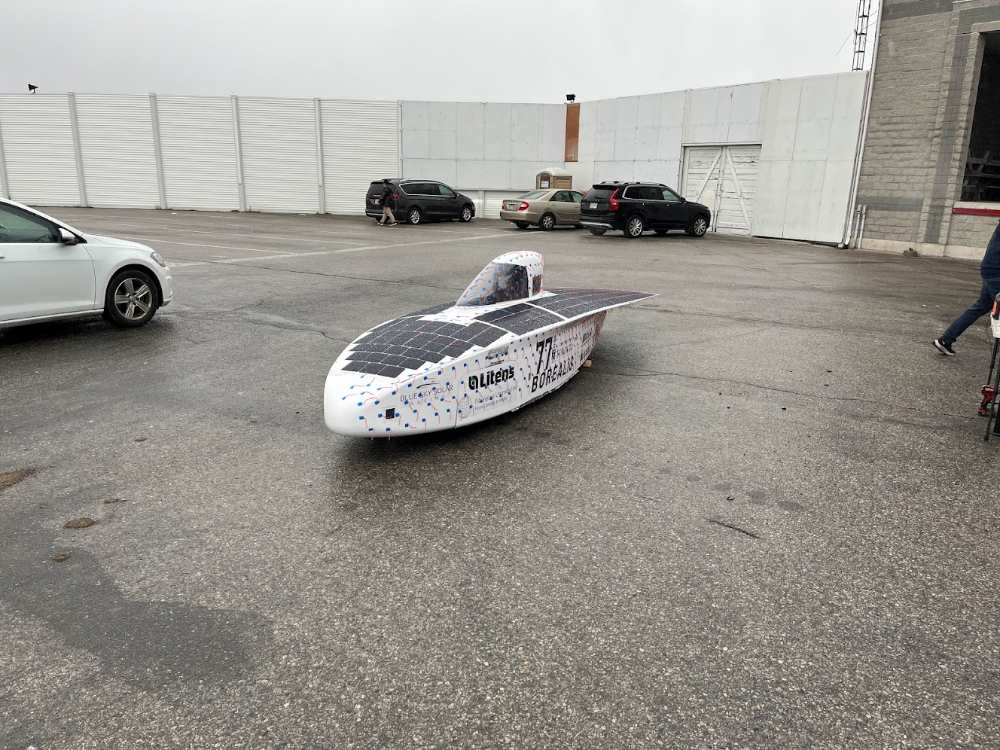

Tuft Testing
 For my first project on the team, I was tasked with developing a tuft flow visualization plan and procedure for the aero team. I approached this project in three phases: research, testing, and then implementation. I researched quite a few flow visualization papers and youtube videos to eventually settle upon a length, color, material, and arrangment for the tufts. Above you can see testing that I did with a hair dryer on my bathroom door. I determined that 80mm long strands of orange cotton string in a hexagonal orientation were the most ideal for my purposes. I also made sure to have both masking tape and refrigerator tape on hand just in case the winter weather was a little too chilly for the adhesive.
 I then decided to try to make the process as efficient as possible. I used an inch diameter dowel and cut a slit down it so I could wrap string around it and cut down the line, making uniform and time-efficient pieces of string. Then making a production line for the attachment and application.
 Once I had my plan together and tools ready, it probably only took around 3-4 hours of time to cover half the car. One tricky spot was the array. After consulting our array lead, I decided to put the tufts on the diamonds that are formed in the corners of the array cells in order to not damage the array.
Unfortunately, the weather did not cooperate on our testing weekend, so we were unable to drive the car at the time. However, I was still able to put together a reasonable and timely tufting procedure for future implementations. And you can still find some of these tufts around the shop..
Final Document: